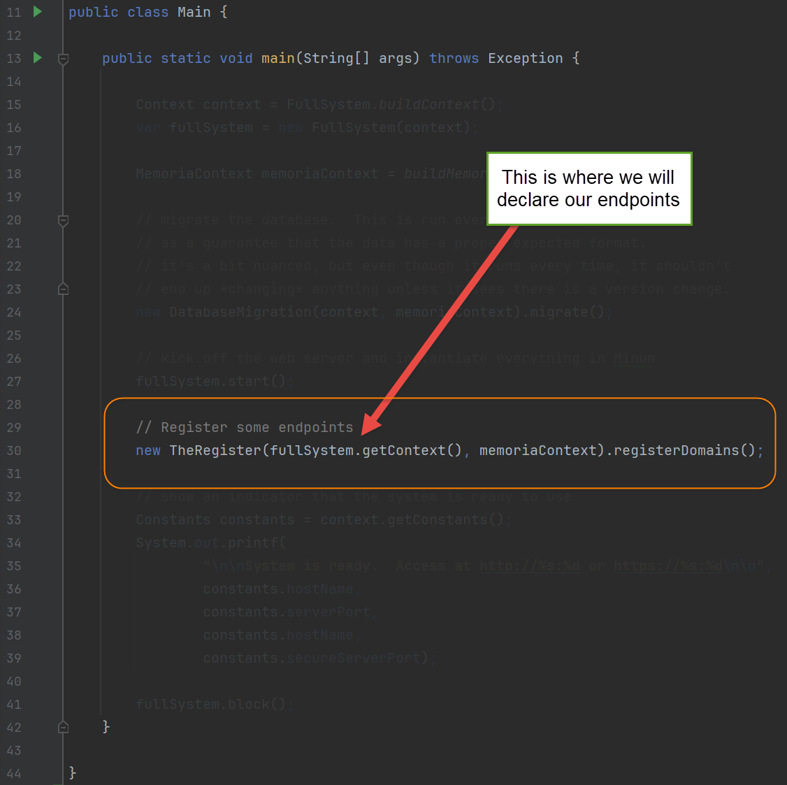
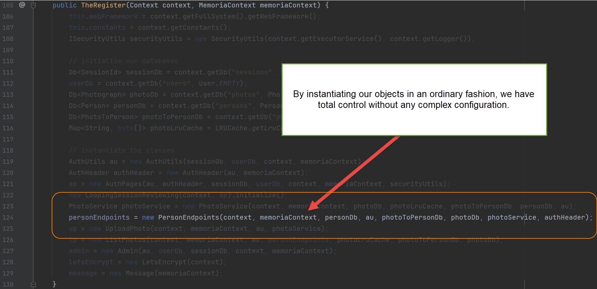
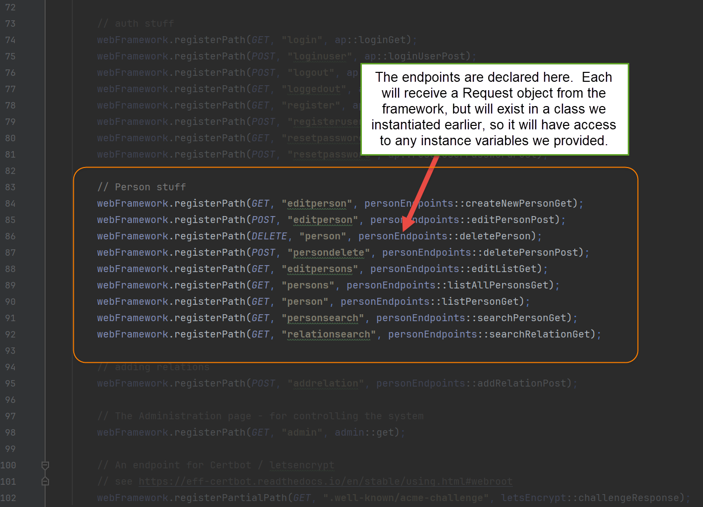
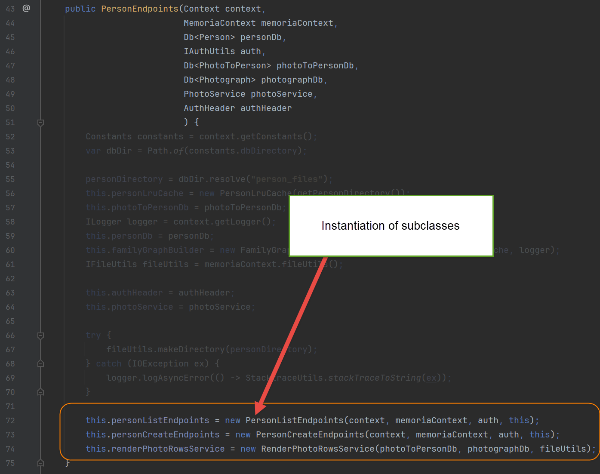

Where is Minum's IOC container; or not complicating things in the first place
I was asked the other day about IOC container use with Minum. The answer is, it is intentionally not provided.
Minum focuses on minimalism (hence the name), and simplicity. Simplicity is an unattainable goal, but a useful guiding star. Each design choice was carefully weighed for an improved ratio of value to accidental complexity. In Minum’s paradigm, IOC containers were not deemed to fall into that category.
IOC containers are a necessity in most popular frameworks, like Asp.NET Web Forms or Spring. Those systems use annotations (e.g. “@GetMapping”) to wire methods up and run them in a complex order of events. There is no practical way to pass objects into the endpoint methods without an IOC container.
There are claims that IOC containers are valuable on their own merits, but I remain unconvinced. I have heard people describe their benefits (e.g. easier swapping out of components during tests), but they discount the drawbacks: complicated setup, sequencing of object initialization, object lifecycle, and setup for tests. Debugging is harder, because understanding the call tree and data flow are harder. Furthermore, the advertised benefits are achievable without any special machinery. Ordinary object-oriented practices will suffice (e.g. having an interface and multiple implementations).
I would rather declare methods that use standard calling conventions throughout my code. It makes debugging and code navigation greatly simplified. A TDD (test-driven development) approach can help tremendously here, where difficult-to-write tests provide a signal that one should reconsider their approach.
This is the basis of the design for the Minum framework
These practices are exemplified in the Memoria project. Examine the class Main.java, which is the entry point to the application, and TheRegister.java, where the endpoints are registered. It is just plain code, without any magic. There is no hidden machinery behind the scenes, only enough code to lower tedium.
To wit:



In this case, the constructor of PersonEndpoints requires a large number of objects since it consolidates some common needs and then redirects requests to several objects it creates. The sub-classes are easier to test, not requiring many parameters for their construction.

I imagine many readers are scoffing at this point. No way could an approach so unsophisticated be considered! But consider how navigable this code is. Its neat simplicity makes our hardest job, debugging, so much easier. As a highly experienced developer, I prioritize maintainability over everything.